Sobre mí
Soy Javi — Product Designer con 4 años de experiencia diseñando productos digitales dentro de la industria de la logística.
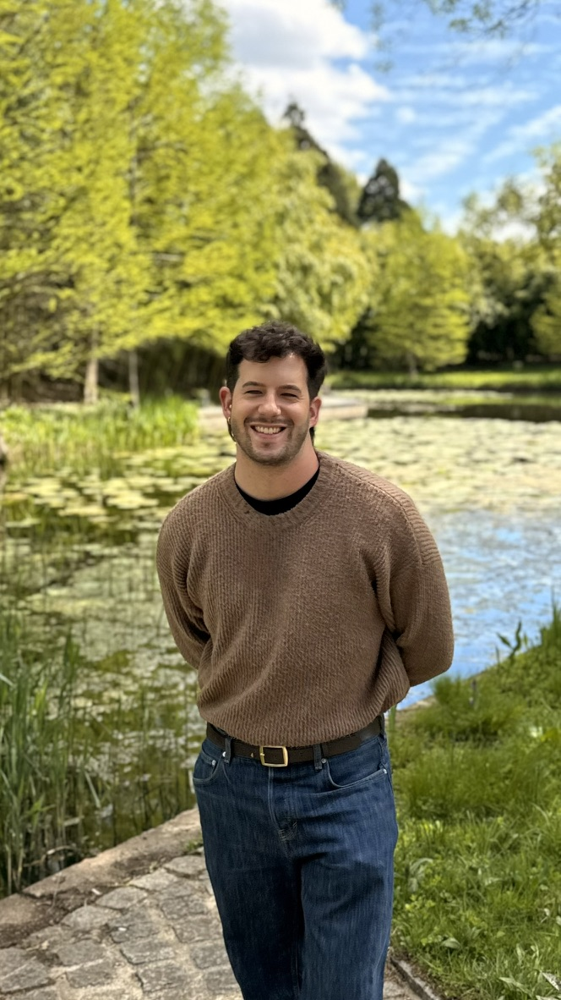
Estudié el Grado en Diseño en la Universidad de La Laguna, donde descubrí mi interés por el diseño de producto a través de una masterclass que recibimos. Mientras tanto, estuve trabajando en Horizon Training como Graphic Designer & Creative Direction, donde generaba contenido audiovisual para sus redes sociales y entrenaba 🏋🏻♂️
Posteriormente, me mudé a Barcelona para completar mi Máster en Dirección en Diseño de Experiencias y Servicios Digitales en Elisava.
En Freightos he tenido la oportunidad de crecer desde becario hasta convertirme en Product Designer, trabajando en sistemas de diseño, arquitectura de la información, investigación de usuarios, prototipado, entre un largo etcétera. Pero siempre con el mismo objetivo desde que empecé a estudiar: ayudar a las personas en su día a día a través del diseño.
Experiencia
-
Freightos
Product Designer
Junior UX/UI Designer
UX/UI Intern
May 2022 → Mar 2026
-
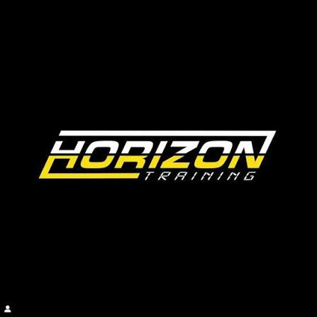
Horizon Training
Graphic Designer & Creative Direction
Jun 2020 → May 2022
Educación
-
2021 — 2022
Máster en Dirección en Diseño de Experiencias y Servicios Digitales
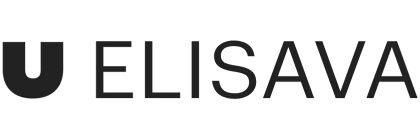
Elisava
-
2017 — 2021
Grado en Diseño
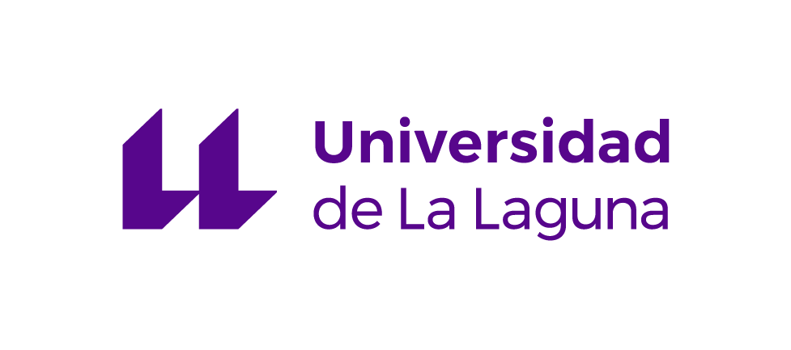
Universidad de La Laguna
Reconocimientos y premios
Premios Laus & Elisava Master Awards
2022 — 2023Elisava Escola Universitària de Disseny i Enginyeria de Barcelona
Doble nominación — a los Premios Laus 2023 y a los Elisava Master Awards 2022 — con el proyecto 'SWAP', desarrollado durante el Máster en Dirección en Diseño de Experiencias y Servicios Digitales.
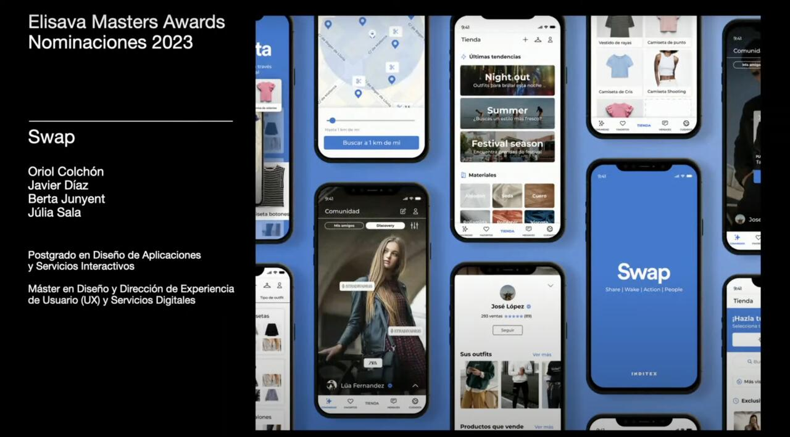
Diseño de señalética COVID-19
Feb 2021Publicación para el periódico de la Universidad de La Laguna
Proyecto de señalización para comunicar la información sobre la Covid-19 en el transporte público, desarrollado junto a otros alumnos del Grado en Diseño de la ULL.
Leer la publicación ↗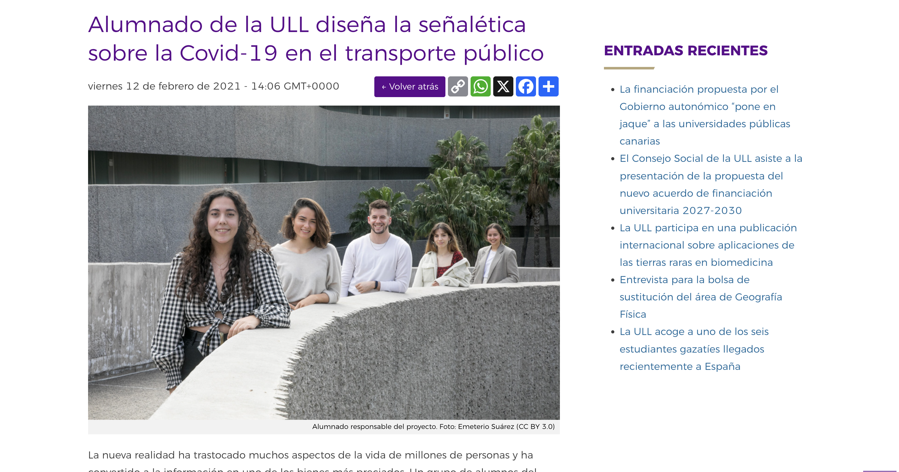
Ver artículo de prensaTestimonios
Ver más"I met Javi when I hired him as an intern, and over the following 4 years I had the chance to see him grow into a Product Designer within the team. He shows up with the same level of commitment regardless of the task at hand, approaching everything with ownership and a positive, solution-oriented mindset."
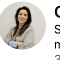
Cristina Sampaio
Senior Product Design Manager at Freightos
"I had the pleasure of working with Javi for over two years as a UX designer, and I can confidently say he is a great person to have on any team. He is kind, easy to work with, and always brings a positive attitude to his work."
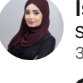
Isra Anabtawi
Senior Product Manager at Freightos
"I had the pleasure of working with Javier for over two years on the same UX team, and I can say without hesitation that he's one of those designers you genuinely want on every project. He brings a rare combination of craft and strategic thinking."
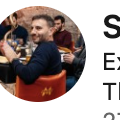
Sebastián Piai
Expert Product Designer at Freightos
"Trabajar con Javier codo con codo en el Grado en Diseño de la Universidad de La Laguna fue una experiencia gratificante que sin duda repetiría más veces en mi trayectoria profesional. Siempre mostraba una actitud proactiva y desarrollaba un punto de vista innovador."
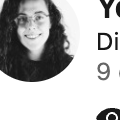
Yerimay Bethencourt Hernández
Diseñadora e Ilustradora
"Estudié con Javier en el Máster de dirección en diseño de experiencias y servicios digitales en Elisava. Es una persona muy proactiva, con amplia visión para nuevos proyectos, creativo, alegre y responsable."
Valentina García Ruiz
Product Designer · Functional Analyst at Volkswagen Group Services
"Tuve la suerte de trabajar con Javi y, más allá de lo profesional, es de esas personas que hacen que el día a día sea mucho mejor. Como UX Designer, tiene una sensibilidad especial para entender a las personas: no solo a los usuarios, sino también al equipo."
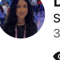
Daniella Álamo
Software Development Engineer at Freightos
"Javier joined Freightos as an intern, and it has been a real joy to watch his growth over the past four years. He stands out not only for the excellent quality of his work and his exceptional technical skill set, but also for his attitude."
Veronica Minniti
HR Business Partner at Freightos
"I worked with Javi at Freightos for many years and on many projects. Javi is a pleasure to work with — always friendly, dedicated and focused on achieving a great product for our customers."
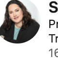
Sharon Schamroth
Product Director at Freightos